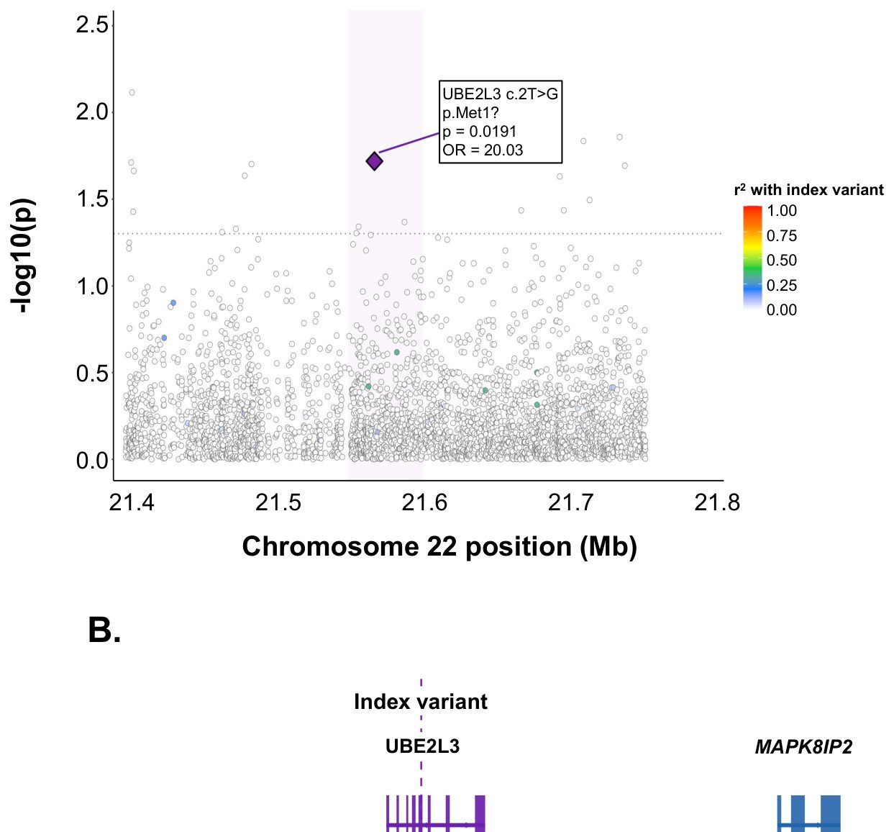

Nima uchun ba'zi odamlar sepsis qarshisida ojiz: javob kam sonli xalqlar genida yashiringan

Rasmning to'liq tavsifi
1-rasm. Butun genom assotsiatsiyasi natijalarining Manxetten grafigi. 210 ta intensiv terapiya bo‘limi bemorlarida (68 ta holat, 142 ta nazorat) sepsisga moyillik uchun alohida variantlar assotsiatsiyasi natijalari. X o‘qi xromosoma pozitsiyasini, Y o‘qi esa -log10(p-qiymat)ni ko‘rsatadi. Uzuk-uzuk qizil chiziq butun genom ahamiyatini (p < 5×10⁻⁸), uzuk-uzuk ko‘k chiziq esa taxminiy ahamiyat chegarasini (p < 1×10⁻⁵) bildiradi. Asosiy lokuslar belgilangan: STK32B (chr4p16.2), RP11-241F15.3 (chr4q13), MUC19 (chr12q12) va chr8p23.1 (DEFB klasteri).
Sepsis har yili millionlab odamlarning hayotiga zomin bo'lib, reanimatologiyaning eng katta jumboqlaridan biri bo'lib qolmoqda. Nima uchun bir xil infeksiyada kimdir tuzalib ketadi, boshqasi esa a'zolar yetishmovchiligidan vafot etadi? Olimlar Qatarning yopiq va o'ziga xos genofondga ega aholisi genomini o'rganishdi. Ma'lum bo'lishicha, UBE2L3 genidagi noyob mutatsiya hujayralarni yallig'lanishni to'xtatish qobiliyatidan mahrum qilib, odamni bakteriyalar oldida himoyasiz qoldiradi.
Asosiysi
- Sepsis sabablarini topish uchun Qatardagi 210 nafar reanimatsiya bemorining genomi sekvenirlashdi
- UBE2L3 genidagi noyob mutatsiya yallig'lanishni nazorat qilish tizimini buzib, xavfni oshiradi
- 26 939 kishi ma'lumotlari ushbu gendagi nuqsonlar og'ir infeksiyalarga sabab bo'lishini tasdiqladi
Batafsil
Tadqiqot doirasida olimlar Qatardagi intensiv terapiya bo'limlarining 210 nafar bemorida to'liq genom sekvenirlashini (WGS) o'tkazdilar. Ulardan 68 nafari sepsis bilan og'rigan bemorlar, 142 nafari esa nazorat guruhidagi boshqa og'ir holatdagi bemorlar edi. GWAS (genom bo'ylab assotsiatsiyalarni izlash) va REGENIE Firth regressiyasi yordamida tadqiqotchilar 31 ta genda 40 ta xavfli asoschi-mutatsiyalarni aniqlashdi. Ular orasida UBE2L3 genidagi c.2T>G (p.Met1?) mutatsiyasi alohida e'tiborni tortdi, chunki u start-kodonning yo'qolishiga (start-loss) va oqsil funksiyasining butunlay buzilishiga olib keladi.
Ushbu gen varianti sepsis bilan og'rigan 68 bemorning 3 nafarida topildi va nazorat guruhida umuman uchramadi (p = 0.026). Genning ahamiyatini tekshirish uchun mualliflar All of Us ma'lumotlar bazasidagi 26 939 nafar bakterial infeksiyali bemorlar ma'lumotlarini tahlil qilishdi. Ma'lum bo'lishicha, UBE2L3 genidagi boshqa zararli mutatsiyalar ham og'ir infeksiyalar xavfini keskin oshiradi (shanslar nisbati 23.10). Biologik mexanizm sichqonlardagi tajribalarda ham tasdiqlandi: makrofaglarda UBE2L3 genining o'chirilishi IL-1Beta yallig'lanish sitokinining parchalanishini buzadi va kuchli yallig'lanish bo'ronini keltirib chiqaradi.
Cheklovlar
Tadqiqot atigi 210 kishilik kichik tanlanmada o'tkazilgan va ushbu ish hali mustaqil taqrizdan o'tmagan preprint hisoblanadi.
Maqolaning batafsil tahlili
Annotatsiya
Sepsis har yili dunyo bo'ylab taxminan 11 million o'limga sabab bo'ladi. Asoschilar populyatsiyalarining to'liq genomini ketma-ketlikda o'qish (WGS) sepsisga moyillik bilan bog'liq genlarni aniqlash uchun noyob imkoniyat yaratadi. Biz intensiv terapiya bo'limidagi 210 nafar arab bemorlari (68 ta sepsis holati va 142 ta nazorat guruhi) bo'yicha WGS ma'lumotlaridan foydalanib, GWAS va EXWAS tahlillarini o'tkazdik.
Izoh
GWAS va EXWAS — bu butun genom yoki ekzom bo'ylab kasallik bilan bog'liq genetik o'zgarishlarni aniqlashga yordam beradigan statistik tahlil usullari.
Saralash uchun REGENIE Firth regressiyasi (p < 0.05), CADD ko'rsatkichi > 20 va AllofUs/gnomAD bazalariga nisbatan AAF boyitilishi kabi mezonlar qo'llanildi. Natijada 31 ta gendagi 40 ta zararli variant ustuvor deb topildi.
Asosiy topilma UBE2L3 genidagi yangi start-loss varianti (c.2T>G; p.Met1?; CADD = 25.6; SIFT = 0.001) bo'ldi. Bu mutatsiya 68 ta sepsis bemorining 3 tasida aniqlandi, nazorat guruhida (142 ta) esa kuzatilmadi (Fisherning aniq testi, P = 0.026). All of Us (AoU) ma'lumotlar bazasida UBE2L3 missens mutatsiyalarining to'planishi bakterial infeksiyalar bilan bog'liq ekanligi tasdiqlandi (n=26,939 holat; SKAT-O P = 2.38 × 10⁻³; OR=23.10; 95% CI = [0.63–845.27]).
Muhim
UBE2L3 genidagi sepsis bilan bog'liq noyob variant aniqlandi, bu klinik ma'lumotlar va sichqonlarda gen nokauti natijasida yuzaga kelgan yallig'lanish bilan tasdiqlanadi.
Dori vositalarini ishlab chiqish uchun moslashtirilgan sun'iy intellekt modellari UBE2L3 genini sepsisga qarshi dori nishoni sifatida 10 balldan 7.8 ballga baholadi. Bu natijalar sichqonlarda UBE2L3 nokauti IL-1Beta vositachiligidagi yallig'lanishning kuchayishiga olib kelishi bilan mos keladi.
Ehtiyot bo'ling
Tadqiqot ma'lum bir populyatsiyaga asoslangan bo'lib, natijalarning umumiyligini tasdiqlash uchun boshqa etnik guruhlarda ham tekshiruv talab etiladi.
Kirish
Sepsis ta'rifi va epidemiologiyasi
Sepsis — bu organizmning infeksiyaga nisbatan noto'g'ri javob qaytarishi natijasida yuzaga keladigan hayot uchun xavfli organ disfunksiyasidir. Sepsis-3 mezonlariga ko'ra, tashxis tasdiqlangan yoki gumon qilingan infeksiya fonida Sequential Organ Failure Assessment (SOFA) shkalasi bo'yicha 2 va undan ortiq ball to'planganda qo'yiladi. Dunyo bo'ylab har yili taxminan 11 million o'lim holati sepsis bilan bog'liq bo'lib, u intensiv terapiya bo'limlarida (ITB) kasallanish va o'limning asosiy sabablaridan biri hisoblanadi.
Muhim
Sepsis yuqori o'lim ko'rsatkichiga ega bo'lgan kritik holat bo'lib, yiliga 11 millionga yaqin inson hayotiga zomin bo'ladi, ammo individual xavf guruhlarini aniqlash hali ham qiyin masala.
Genetik moyillik va mavjud tadqiqotlarning cheklovlari
Sepsis rivojlanishi va uning oqibatlarida genetik omillarning roli tobora ko'proq tan olinmoqda. Egizaklar va oilaviy tahlillar infeksion kasalliklar oqibatidagi o'limda irsiy komponent mavjudligini tasdiqlaydi. Garchi genom miqyosidagi assotsiatsiya tadqiqotlari (GWAS) sepsis bilan bog'liq bir qator lokuslarni aniqlagan bo'lsa-da, ularning aksariyati Yevropa populyatsiyalarida o'tkazilgan. Bunday usullar keng tarqalgan variantlarga moyil bo'lib, katta ta'sir kuchiga ega bo'lgan noyob, populyatsiyaga xos allellarni o'tkazib yuboradi. GWAS katalogida sepsis bilan bog'liq 62 ta gen qayd etilgan, ammo sepsisga moyillikning genetik arxitekturasi hali to'liq o'rganilmagan.
Izoh
GWAS (genom miqyosidagi assotsiatsiya tadqiqoti) — bu kasallik bilan bog'liq bo'lgan genetik o'zgarishlarni aniqlash uchun butun genomni skanerlash usuli.
To'liq genom sekvenlashning (WGS) ahamiyati
To'liq genom sekvenlash (WGS) asoschi populyatsiyalarda yangi kasallik bilan bog'liq variantlarni aniqlash uchun kuchli vositadir. Arab populyatsiyalari tarixiy «tiqinlar» va qarindoshlar o'rtasidagi nikohlar tufayli gnomAD yoki AoU kabi yirik bazalarda mavjud bo'lmagan o'ziga xos allellarga ega. Bu variantlar ushbu jamoalarda kasallik xavfiga nomutanosib ravishda ta'sir qilishi mumkin.
Tadqiqot dizayni va asosiy natijalar
Ushbu ishda Qatardagi n=210 arab ITB bemorlarida WGS yordamida sepsisga moyillik bo'yicha GWAS taqdim etilgan. Biz yagona variant assotsiatsiyasini sinash, jins bo'yicha tahlil, gen darajasidagi yuklamani sinash va yo'llar tahlilini o'tkazdik. Tahlillar UBE2L3 genidagi funksiyani yo'qotuvchi arab variantining muhim assotsiatsiyasini aniqladi. Dori vositalarini kashf qilish uchun moslashtirilgan generativ sun'iy intellekt ushbu genni sepsis uchun istiqbolli nishon sifatida belgiladi. Makrofaglarda UBE2L3 nokaut (KO) qilingan sichqon modellarida IL-1Beta ubikvitinlanishi va degradatsiyasining pasayishi kuzatildi, bu esa sepsis modelida yallig'lanish javobining kuchayishiga olib keldi.
Ehtiyot bo'ling
Tadqiqot 210 nafar bemordan iborat kichik guruhda o'tkazilgan va UBE2L3 geni bo'yicha xulosalar sichqonlardagi nokaut modellariga asoslangan, shuning uchun natijalarni odamlarga to'g'ridan-to'g'ri ko'chirishda ehtiyotkorlik talab etiladi.
Natijalar
Kohorta xarakteristikasi
O‘rganilgan guruh 210 nafar reanimatsiya bo‘limi (OIT) bemoridan iborat bo‘lib, ulardan 68 nafari (32,4%) sepsis, 142 nafari (67,6%) esa nazorat guruhiga kiritilgan. Tanlamada 111 nafar erkak (52,9%) va 99 nafar ayol (47,1%) bo‘lib, yoshi 23 dan 91 yoshgacha (o‘rtacha 61,4 ± 15,8 yosh) tashkil etdi (1-jadval). UBE2L3 p.Met1? variantining uchala tashuvchisi ham organlar disfunksiyasi (SOFA ≥2) bo‘lgan sepsisli erkaklar edi.
Muhim
210 bemordan iborat kogorta sepsis bilan og‘rigan 3 nafar erkakda UBE2L3 genining kamyob variantini aniqlash imkonini berdi.
Variantlar tahlili (GWAS)
GATK va VQSR filtrlashdan so‘ng, assotsiatsiyani tekshirish uchun MAC ≥3 bo‘lgan 16,6 million avtosomal variant tanlab olindi. REGENIE usuli va Firth logistik regressiyasi qo‘llanildi. Genomik inflyatsiya koeffitsiyenti λGC=0,840 bo‘lib, bu kichik tanlama (n=210) uchun xos bo‘lgan biroz deflyatsiyani ko‘rsatadi (SN 1-rasm). Genom bo‘ylab ahamiyatlilik chegarasiga (p < 5 × 10⁻⁸) hech qanday variant yetib bormadi (1-rasm). To‘rtta variant «taxminiy» ahamiyatlilikka (p < 5 × 10⁻⁵) erishdi, ammo ular sepsis bilan bog‘liq bo‘lmagan genlarda joylashgani uchun artefakt deb topildi. Jami 396 117 ta variant p < 0,05 nominal qiymatiga ega edi. Shuningdek, 316 ta funksiyani yo‘qotish (pLoF) yoki patogen missens-mutatsiyalar tahlil qilindi, ulardan 295 tasi p < 0,05 natijani ko‘rsatdi (SN I, II-jadval).
Izoh
GWAS — bu ma’lum bir belgi bilan bog‘liq genetik variantlarni topish uchun minglab odamlarning genomini solishtirish usuli.
Gen darajasidagi tahlil (Burden tests)
Kamyob variantlarning umumiy ta’sirini tahlil qilish 20 414 ta gen uchun o‘tkazildi. Bonferroni tuzatish chegarasidan (α = 0,05, p < 2,4 × 10⁻⁶) hech qanday gen o‘tmadi (2-rasm). Shunga qaramay, biologik ahamiyatli signallar aniqlandi. TRPM5 geni (M2 niqobi: LoF + zararli missens-mutatsiyalar) 7,43 OR va p = 3,4 × 10⁻⁴ bilan yetakchi bo‘ldi, ayollarda bu ta’sir kuchliroq namoyon bo‘ldi (OR = 10,6, p = 0,012). Shuningdek, IL19 (OR = 2,65, p = 7,1 × 10⁻⁴) va GZMM (OR = 14,0, p = 8,7 × 10⁻⁴) ham ahamiyatli assotsiatsiyalarni ko‘rsatdi.
Muhim
Gen darajasidagi tahlil sepsisda yallig‘lanish javobini tartibga solishda TRPM5, IL19 va GZMM genlarining potensial rolini aniqladi.
Arab populyatsiyasida UBE2L3 variantining identifikatsiyasi
Yuqori patogenlik (CADD ≥20) va p ≤ 0,05 qiymatiga ega 316 ta variant orasidan AoU va GnomAD bazalarida uchramaydigan 31 ta gendagi 40 ta variant ajratib olindi. Til modellari (gemma4, txgemma) yordamida UBE2L3 eng istiqbolli nomzod deb topildi. Variant (chr22:21,567,746:T>G; p.Met1?) 25,6 CADD balliga (eng patogen 0,3% ichida), 0,001 SIFT balliga va 0,0071 allel chastotasiga ega. Mutatsiya start-kodonni (ATG → AGG) o‘zgartiradi, bu UBE2L3 oqsilining (152 aminokislota) funksiyasini yo‘qotishiga olib keladi. Uchala tashuvchi ham sepsisli erkaklar edi (68 tadan 3 tasi, nazoratda 142 tadan 0 tasi, Fisher testi p = 0,026). Variant gnomAD bazasida (945 000 dan ortiq odam) topilmadi, bu uning arab populyatsiyasiga xosligini ko‘rsatadi. IGV orqali tekshirish barcha tashuvchilarda variantni tasdiqladi (o‘qish chuqurligi 19x–40x) (SN 3-rasm).
Ehtiyot bo'ling
Tanlama kichik va variant ma’lum bir populyatsiyaga xos bo‘lgani uchun natijalar mustaqil replikatsiyani talab qiladi.
UBE2L3 ning mustaqil validatsiyasi
Variant darajasida replikatsiya qilish imkoni bo‘lmagani uchun, AoU bazasida (26 939 ta infeksiya holati, 243 470 ta nazorat) gen darajasida tekshiruv o‘tkazildi. UBE2L3 missens-variantlari tahlili ahamiyatli assotsiatsiyani tasdiqladi (SKAT-O p = 2,38 × 10⁻³, OR = 23,10), bu UBE2L3 variatsiyalarining infeksiyalarga moyillikka ta’sir qilish gipotezasini qo‘llab-quvvatlaydi.
Sepsis bo‘yicha nashr etilgan GWAS ma’lumotlari bilan kesishish
Sepsis bilan bog‘liq belgilar bo‘yicha 62 ta genni o‘z ichiga olgan GWAS katalogi (SN Jadval V, VI) bilan solishtirish bizning tadqiqotimizdagi 25 ta gen ilgari xabar qilingan assotsiatsiyalar bilan mos kelishini aniqladi (SN Jadval VII). Bularga USP37, LRBA, KIF15, GPM6A, MAD1L1, RIN3, NFKBIL1, CHRNA7, SLAMF6, LINC00378, SAMD9, SLC35F4, TFRC, CLIC6, ANKMY2, CSMD1, FER, RPE65, HRH1, LPP, LINC00887, GAK, VPS13A, CRISPLD2 va FLT1 kiradi.
Muhim
Tadqiqot sepsis bilan bog‘liq bo‘lgan va avvalgi adabiyotlarda qayd etilgan 25 ta genni aniqladi.
All of Us ma’lumotlar bazasi bilan o‘zaro bog‘liqlik
Ushbu tadqiqotdagi CADD ≥20 va p ≤0,05 bo‘lgan 316 ta variantdan 17 tasi All of Us (AoU) bazasida assotsiatsiyalarni ko‘rsatdi (SN Jadval VIII, IX). Bundan tashqari, HMC ICU kohortasida 117 ta variant gomozigotali tashuvchilarga ega edi. O‘n ikkita variant ayollarga xos ahamiyatga ega bo‘ldi (ayollarda p<0,05, erkaklarda p>0,05) va 57 ta gendagi 58 ta variant ICU kohortasida keng tarqalgan, ammo gnomAD'da kam uchraydigan bo‘lib chiqdi, bu populyatsiyaga xos boyishni ko‘rsatadi.
Izoh
CADD (Combined Annotation Dependent Depletion) — genetik variantlarning patogenligini baholovchi metrika; ≥20 qiymati variant eng zararli 1% ga kirishini bildiradi.
GWAS'dan CADD ≥20 va p ≤0,05 bo‘lgan 295 ta gen bo‘yicha yuklamani tekshirish (burden testing) p<0,05 bo‘lgan 163 ta genni aniqladi (SN Jadval X). HLA-DQA1 va PSMB8 sepsis patofiziologiyasi bilan eng kuchli biologik aloqalarni ko‘rsatdi. ABCG2 antibakterial immunitet bilan mexanik aloqaga ega, SBNO1 esa sepsisga xos plazma peptid signaturalari bilan bog‘liq oqsillar qatoriga kiradi. p<0,05 bo‘lgan 163 ta gen orasida ICU kohortasiga xos 32 ta variantni o‘z ichiga olgan 12 ta gen bor edi: FAM72B, NOTCH2NL, SEC22B, BOD1, HLA-B, ZNF92, DYNLL1, GXYLT1, PABPC3, ZFYVE1, ZNF443 va UBE2L3.
UBE2L3 lokusining mintaqaviy bog‘liqlik tahlili (LD)
UBE2L3 lokusidagi (chr22:21,567,746 T>G; c.2T>G; p.Met1?) assotsiatsiya yaqin atrofdagi keng tarqalgan variant bilan bog‘liqlik (LD) tufaylimi yoki kam uchraydigan start-loss allelining o‘zi sabablimi, buni aniqlash uchun 350 kb oynada mintaqaviy LD tahlili o‘tkazildi (3-Jadval). Barcha 210 ishtirokchining fazalangan WGS gaplotiplari va PLINK2 dasturi yordamida 3620 ta variant uchun r² hisoblandi (3A-Rasm).
Izoh
Bog‘liqlik (LD) — turli lokuslardagi allellarning tasodifiy bo‘lmagan assotsiatsiyasi; agar variantlar kuchli LD holatida bo‘lsa, qaysi biri kasallikning haqiqiy sababi ekanligini aniqlash qiyin.
UBE2L3 lokusidagi LD tuzilishi juda siyrak edi. Maksimal r² qiymati 0,332 ni tashkil etdi va butun mintaqada atigi to‘qqizta variant r² > 0,1 dan oshdi (3-Jadval). Hech bir variant r² > 0,5 ga yetmadi. Kuchli bog‘liqlikning yo‘qligi assotsiatsiya signali bevosita kam uchraydigan start-loss alleli (AF=0,007) tomonidan boshqarilishini tasdiqlaydi. Bu noyob gaplotipdagi "asoschi allel" (founder allele) uchun xosdir. Gen tuzilishi tahlili (3B-Rasm) variant UBE2L3 ning birinchi ekzonida, YDJC va BCR genlari orasida joylashganligini ko‘rsatdi. Shunday qilib, p.Met1? varianti ushbu lokusdagi yagona ishonchli sababchi variant hisoblanadi.
Muhokama
Sepsisga moyillikning genetik asosi
210 nafar arab millatiga mansub jonlantirish bo‘limi bemorlarida o‘tkazilgan to‘liq genom assotsiatsiyasi tadqiqoti (GWAS) natijasida UBE2L3 (c.2T>G; p.Met1?) genida funksiyani yo‘qotuvchi noyob variant aniqlandi. Bu variant Qatar Genome Programme (14 669 kishi) va gnomAD v4.1 (251 000 kishi) ma’lumotlar bazalarida uchramaydi, bu uning arab populyatsiyasiga xos «asoschi varianti» ekanligini ko‘rsatadi. Ushbu topilma Yevropa populyatsiyalariga asoslangan an’anaviy GWAS usullari ba’zi etnik guruhlarga xos genetik belgilarni aniqlay olmasligini tasdiqlaydi.
Muhim
UBE2L3 genidagi c.2T>G varianti translyatsiya boshlanishini to‘liq to‘xtatib, oqsil funksiyasining yo‘qolishiga olib keladigan arab «asoschi varianti» hisoblanadi.
UBE2L3 geni E2-ubikvitin-kon’yugirlovchi fermentni kodlaydi, u TLR→NF-κB→sitokin yo‘lida muhim rol o‘ynaydi. Start kodondagi mutatsiya oqsil sintezini butunlay to‘xtatadi. UBE2L3 avvalroq revmatoid artrit, Kron kasalligi va tizimli qizil yuguruk kabi autoimmun kasalliklar bilan bog‘langan. Sepsis patogenezidagi o‘rni uning LUBAC kompleksi orqali NF-κB ni faollashtirish qobiliyati bilan izohlanadi. UBE2L3 ning kamayishi NF-κB faollashuvini va yallig‘lanish genlari ekspressiyasini pasaytiradi, bu esa uni immun javobning asosiy regulyatoriga aylantiradi.
Izoh
LUBAC — bu boshqa oqsillarni (masalan, NEMO) chiziqli ubikvitin zanjirlari bilan «belgilab», yallig‘lanish kaskadini ishga tushiruvchi oqsil kompleksidir.
UBE2L3 ning sepsis bilan yana bir bog‘liqligi IL-1β regulyatsiyasidir. Inson va sichqon makrofaglarida UBE2L3 pro-IL-1β ning proteasomalar orqali parchalanishiga yordam beradi. UBE2L3 yetishmovchiligida pro-IL-1β darajasi oshib, inflyammasoma faollashganda yetuk IL-1β ning haddan tashqari ko‘p ajralib chiqishiga olib keladi. Bu UBE2L3 funksiyasining buzilishi himoya yallig‘lanishidan patologik «sitokin bo‘roni»ga o‘tishga sabab bo‘lishini anglatadi.
Ehtiyot bo'ling
Tadqiqot jonlantirish bo‘limi bemorlari asosida o‘tkazilgan; tanlanma xususiyatlari tufayli tashuvchilik chastotasini umumiy aholiga ekstrapolyatsiya qilishda ehtiyot bo‘lish kerak.
UBE2L3 ning sepsisga moyillikdagi roli quyidagi dalillar bilan tasdiqlanadi: funksiyaning to‘liq yo‘qolishi (CADD = 25.6, SIFT = 0.001), gnomAD va AoU bazalarida (945 000 dan ortiq kishi) yo‘qligi, faqat bemorlarda uchrashi (3/68 ga qarshi 0/142, p = 0.026), NF-κB yo‘lidagi biologik ahamiyati, AoU kohortasida mustaqil validatsiya (SKAT-O P = 2.38×10⁻³) va dori-darmon nishoni sifatida yuqori reytingi.
Cheklovlar
Ushbu tadqiqot bir qator cheklovlarga ega. Birinchidan, 210 nafar bemordan iborat nisbatan kichik tanlama statistik quvvatni pasaytirdi, natijada hech qanday variant genom miqyosidagi ahamiyatlilik darajasiga yetmadi. Aniqlangan assotsiatsiyalar taxminiy xarakterga ega va kattaroq kogortalarda tekshirilishi kerak. Ikkinchidan, UBE2L3 geni bilan bog'liq topilma biologik jihatdan asosli bo'lsa-da, atigi uchta tashuvchiga asoslangan, bu esa funksional validatsiyani talab qiladi. Uchinchidan, tadqiqot Qatardagi bitta intensiv terapiya bo'limi (ITB) bazasida o'tkazilgan, bu esa xulosalarni boshqa populyatsiyalarga tatbiq etish imkoniyatini shubha ostiga qo'yadi.
Muhim
210 kishilik cheklangan tanlama va populyatsiyaning o'ziga xosligi natijalarni talqin qilishda ehtiyotkorlikni talab qiladi, ammo ish butun genomni ketma-ketliklash (WGS) orqali kam uchraydigan variantlarni aniqlash samaradorligini ko'rsatadi.
To'rtinchidan, guruhlar o'rtasidagi nomutanosiblik (holatlar 32% ni tashkil etdi) ushbu omilni tuzatish uchun Firt logistik regressiyasidan foydalanilganiga qaramay, tahlil quvvatini pasaytirgan bo'lishi mumkin. Beshinchidan, ishtirokchilarni bitta markaz doirasida tanlash tizimli xatolikka olib keldi: nazorat guruhi sog'lom ko'ngillilardan emas, balki sepsis bo'lmagan og'ir bemorlardan iborat edi, bu esa allellar chastotasi bo'yicha ma'lumotlarning butun arab populyatsiyasiga tatbiq etilishini cheklaydi. Nihoyat, maqsadli ustuvorliklarni belgilash uchun katta til modellaridan (LLM) foydalanish izlanish xarakteriga ega va yakuniy dalil hisoblanmaydi.
Ehtiyot bo'ling
Sog'lom odamlar o'rniga ITB bemorlarini nazorat guruhi sifatida ishlatish genlar chastotasini baholashda xatoliklarga olib kelishi mumkin.
Ushbu cheklovlarga qaramay, mazkur tadqiqot asoschi populyatsiyalarda butun genomni ketma-ketliklash (WGS) salohiyatini namoyish etadi. Ushbu yondashuv standart genotiplashda e'tibordan chetda qoladigan kuchli ta'sirga ega kam uchraydigan variantlarni aniqlashga imkon beradi. Populyatsiyaga xos bo'lgan yuqori ahamiyatli variantlarning topilishi turli etnik guruhlarda sepsisni davolashda shaxsiylashtirilgan tibbiyotni rivojlantirish uchun muhim ahamiyatga ega.
Usullar
Tadqiqot populyatsiyasi
Tadqiqotga Hamad Medical Corporation (IRB 19-00037) reanimatsiya bo‘limining (OIT) 210 nafar bemori kiritilgan bo‘lib, ulardan 68 nafari sepsis bilan, 142 nafari esa sepsis bo‘lmagan holatlar edi. Butun genom sekveniroviyasi (WGS) Illumina HiSeq 4000 asbobida 2x150 b.n. juft-oxirgi o‘qishlar va 30x qoplash chuqurligi bilan amalga oshirildi. GRCh38 referens genomiga moslashtirish BWA yordamida, variantlarni aniqlash esa GATK HaplotypeCaller orqali bajarildi. Tahlil uchun minMAC ≥3 bo‘lgan 16,6 million biallel autosom variantlar tanlab olindi.
Sifat nazorati
Assotsiatsiyaning eng yuqori signallari sifat nazorati barcha 210 ta BAM-fayllar uchun samtools mpileup (v1.20) orqali o‘tkazildi. Allel chastotalarining muvofiqligi (VCF va pileup) <0,03 farq chegarasi (deltaAF) bilan baholandi. Shuningdek, zanjir siljishi (strand bias) baholandi va Integrative Genomics Viewer (IGV) orqali vizual tekshiruv o‘tkazildi.
Fazalash
Korteks bo‘ylab gaplotiplarni aniqlash uchun genotiplarni fazalash BEAGLE v5.1 yordamida bajarildi. Fazalanmagan genotiplar (0/1) bo‘lgan birlashtirilgan VCF-fayl fazalangan (0/1) faylga aylantirildi va tabix orqali indekslandi.
Izoh
Fazalash — bu allellarning qaysi xromosomada (ota yoki ona) joylashganligini aniqlash jarayoni bo‘lib, gaplotiplarni tushunish uchun muhimdir.
Variantlarni annotatsiyalash
Annotatsiya bir nechta vositalar yordamida o‘tkazildi: rsID dbSNP orqali, funksional ta’sirlar (LOF va NMD) SnpEff (GRCh38.99) orqali, klinik ahamiyat esa ClinVar orqali qo‘shildi. Patogenlik ballari (SIFT, PolyPhen-2 HDIV, REVEL, MutationTaster, FATHMM, MetaSVM, CADD) dbNSFP v5.3.1a dan olindi. Aholi allel chastotalari gnomAD v4.1 dan annotatsiya qilindi va AoU ma’lumotlar bazasida mavjudligi tekshirildi.
GWAS tahlili
Butun genom assotsiatsiyasi (GWAS) REGENIE v3.2.9 yordamida ikki bosqichda amalga oshirildi. Birinchi bosqichda poligen fonni baholash uchun ridge regressiya (LOCO) modeli qo‘llanildi. Ikkinchi bosqichda Firth logistik regressiyasi (68 holat/142 nazorat, 32% holat ulushi) qo‘llanildi. Kovariatlar: yosh, jins, BMI, SOFA va APACHE II ballari, OITdagi kunlar. Tahlil 16,6 million variant bilan cheklandi. Jins bo‘yicha stratifikatsiyalangan tahlil erkaklar (n=111) va ayollar (n=99) uchun o‘tkazildi.
Genga asoslangan yuk tahlili
Yuk tahlili (burden testing) 20 414 ta gen bo‘ylab beshta test (SKAT, SKAT-O, SKATO-ACAT, ACATV, ACATO) va to‘rtta variant niqobi (M1-M4) yordamida o‘tkazildi. Variantlar to‘rtta chastota (AAF) guruhiga ajratildi. Bonferroni tuzatishi bilan ahamiyatlilik chegarasi p<6,8×10⁻⁷ etib belgilandi.
Asoschi variantlarni ustuvorlashtirish va mustaqil validatsiya
Asoschi variantlar GWAS ahamiyatliligi, yuqori patogenlik (CADD ≥20), gnomAD/AoU da yo‘qligi va immun tizimiga aloqadorligi bo‘yicha tanlandi. 316 ta variantdan 31 ta gen Qatar populyatsiyasi uchun noyob deb topildi. UBE2L3 genining validatsiyasi All of Us dasturidagi 26 939 ta bakterial infeksiya holati bo‘yicha SKAT-O yordamida o‘tkazildi.
Mintaqaviy bog‘liqlik tahlili
Fazalangan r² qiymati PLINK2 v2.0.0-a.7.1 yordamida chr22:21,400,000–21,750,000 (GRCh38) mintaqasi uchun hisoblandi. 860 ta multiallel variantlar chiqarib tashlangandan so‘ng, 3 620 ta biallel SNP tahlil uchun qoldi. Gen koordinatalari Ensembl release 109 dan olingan.
Dori vositalari nishonlarini aniqlash uchun sun'iy intellekt
Potensial dori nishonlarini ustuvorlashtirish uchun tadqiqotchilar zararli ta'sirga ega deb bashorat qilingan asoschi variantlardan foydalandilar. Tahlil qilish uchun uchta yirik til modeli (LLM) jalb etildi: Therapeutic Data Commons ma'lumotlari (shu jumladan DisGeNet bazasidagi gen-kasallik bog'liqliklari) asosida qayta o'qitilgan txgemma-9b ixtisoslashgan modeli, hamda ikkita universal model — gemma4-e4b va yangilangan gemma4-12b-unified.
Izoh
LLM (yirik til modellari) — bu katta hajmdagi ma'lumotlarni tahlil qilish va ehtimolliklarni bashorat qilish qobiliyatiga ega bo'lgan chuqur o'qitish algoritmlari bo'lib, bu holatda ular genning dori nishoni sifatidagi istiqbolini baholash uchun ishlatiladi.
Har bir modelga variantlar uchun umumlashtirilgan statistik ma'lumotlar va funksional annotatsiyalar taqdim etildi. Neyron tarmoqlarning vazifasi har bir gen uchun 0 dan 10 gacha bo'lgan shkala bo'yicha ball qo'yish edi, bu ball genning dori ta'siri uchun qanchalik jozibadorligini aks ettiradi. Olingan natijalar ham modellar o'rtasida, ham har bir modelning o'zida «aprior» (assotsiatsiya ma'lumotlarisiz) va «aposterior» (statistik ma'lumotlar bilan) baholarni solishtirish orqali tahlil qilindi.
Rasmning to'liq tavsifi
1-rasm. Butun genom assotsiatsiyasi natijalarining Manxetten grafigi. 210 ta intensiv terapiya bo‘limi bemorlarida (68 ta holat, 142 ta nazorat) sepsisga moyillik uchun alohida variantlar assotsiatsiyasi natijalari. X o‘qi xromosoma pozitsiyasini, Y o‘qi esa -log10(p-qiymat)ni ko‘rsatadi. Uzuk-uzuk qizil chiziq butun genom ahamiyatini (p < 5×10⁻⁸), uzuk-uzuk ko‘k chiziq esa taxminiy ahamiyat chegarasini (p < 1×10⁻⁵) bildiradi. Asosiy lokuslar belgilangan: STK32B (chr4p16.2), RP11-241F15.3 (chr4q13), MUC19 (chr12q12) va chr8p23.1 (DEFB klasteri).

Rasmning to'liq tavsifi
2-rasm. Yuklama testi (burden test) uchun Manxetten grafigi. X o‘qi xromosoma pozitsiyasini, Y o‘qi esa -log10(p-qiymat)ni ko‘rsatadi. Uzuk-uzuk qizil chiziq butun genom ahamiyatini (p < 5×10⁻⁸), uzuk-uzuk ko‘k chiziq esa taxminiy ahamiyat chegarasini (p < 1×10⁻⁵) bildiradi. Eng ahamiyatli beshta gen belgilangan: MTMR11 (chr1), IL19 (chr1), TRPM5 (chr11), SPATA7 (chr14) va GZMM (chr19).


Rasmning to'liq tavsifi
3-rasm. UBE2L3 lokusining mintaqaviy assotsiatsiyasi va bog‘liqlik disbalansi grafigi. A. chr22:21.4–21.76 Mb (GRCh38) mintaqasidagi 3620 ta biallelik SNP uchun -log₁₀(P). Har bir nuqta bitta variantni ifodalaydi; rang indeks variantiga (chr22:21,567,746 T>G; binafsha rangli romb) nisbatan fazalangan r² ni ko‘rsatadi, u 210 nafar arab intensiv terapiya bemorlarining WGS gaplotiplari asosida hisoblangan (PLINK2 v2.0.0 -r2-phased). Binafsha rangli soya UBE2L3 gen tanasini bildiradi. Uzuk-uzuk gorizontal chiziq nominal ahamiyatni (P=0.05) ko‘rsatadi. Kuchli bog‘liqlik disbalansidagi variantlarning yo‘qligi (maksimal r²=0.332; r²>0.5 bo‘lgan variant yo‘q) assotsiatsiya signali bog‘langan umumiy variant emas, balki start-kodon yo‘qolishiga olib keladigan kam uchraydigan allel tomonidan boshqarilishini tasdiqlaydi, bu xususiy gaplotipdagi arablar uchun xos bo‘lgan asoschi allel bilan mos keladi. B. UBE2L3 lokusidagi gen tuzilishi (Ensembl GRCh38). Ekzonlar to‘ldirilgan to‘rtburchaklar shaklida; intronlar transkripsiya yo‘nalishini ko‘rsatuvchi yo‘nalishli strelkali gorizontal chiziqlar sifatida ko‘rsatilgan. Binafsha rangli uzuk-uzuk vertikal chiziq indeks varianti pozitsiyasini belgilaydi. GRCh38/hg38 koordinatalari.
Tadqiqot sxemasi
Preprint hali taqriz qilinmagan. Xulosalar dastlabki.
Manba
| Manba | Kategoriya | Preprint litsenziyasi |
|---|---|---|
| medRxiv | genetic and genomic medicine | все права у авторов |
Manbalar
| Manba | Havola |
|---|---|
| Страница препринта | medrxiv.org |
| Полный текст (PDF) | medrxiv.org |
| DOI | doi.org |
| Метаданные Crossref | api.crossref.org |
| Europe PMC | europepmc.org |
| Иллюстрация | commons.wikimedia.org |